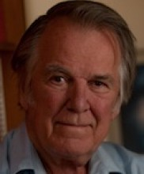

Please note: the AAS Obituaries are temporarily being hosted on this website while their full content is being ingested into the PubPub publishing platform newly adopted by the Bulletin of the American Astronomical Society. When the migration is complete, your existing links will take you to the final, migrated content. Contact peter.williams@aas.org with any questions.
F. Curtis Michel (1934-2015)
Reprinted with permission from Rice University.
F. Curtis (Curt) Michel, the Andrew Hays Buchanan Professor Emeritus of Space Physics and Astronomy, died Feb. 26 at the age of 80.
Although he retired in 2000 after 37 years at Rice, Michel continued to keep an office on campus, where he pursued his studies of solar winds, radio pulsars and numerical methods.
He was part of the fourth class of astronauts chosen by NASA in 1965 as the agency ramped up the Apollo moon program. He was one of six scientist-astronauts in the class, the first on a roster that until that point had been largely limited to test pilots.
Though he never launched into space, Michel, who was an Air Force pilot in the 1950s, participated in the full astronaut-training program while on leave from Rice. He told Rice News in 2009 that he left NASA in 1969 when it became apparent he would not be assigned an Apollo mission.
“When we were selected at the urging of the National Academy, the idea was they wanted scientists to be sent to the moon,” he said. “But when we got in, the astronaut office’s idea was to use the scientists after the lunar missions, in what they called ‘Apollo Applications.’ It was sort of a vague idea. Skylab could be argued to be an Apollo Application.”
He maintained that his decision to return to research prompted a shuffle among flight crews that led to one scientist, Harrison “Jack” Schmitt, landing on the moon with Apollo 17. “The National Academy of Sciences got all pushed out of shape when I left,” Michel said. “I think that was largely influential in Jack getting his flight. When it looked like their primary idea of getting a scientist to the moon was going to flop, they finally started pushing their weight around.”
Michel earned bachelor’s and doctorate degrees at the California Institute of Technology, where he studied with Nobel Prize laureates Richard Feynman and William Fowler. He was a research fellow there when Alexander Dessler, who founded Rice’s first-in-the-nation Space Science Department, recruited him in 1963. He chaired the department from 1974 to 1979.
Michel is survived his wife, Bonnie Hausman, a Web technical specialist in the Department of Mathematics, and two children, Alice and Jeff. A celebration of life service will be held at the Rice chapel on May 3 at 1 p.m., followed by a reception at the Rice Memorial Center’s Grand Hall.
Obituary written by: Mike Williams
Additional links:
BAAS Citation: BAAS, 2015, 47, 008